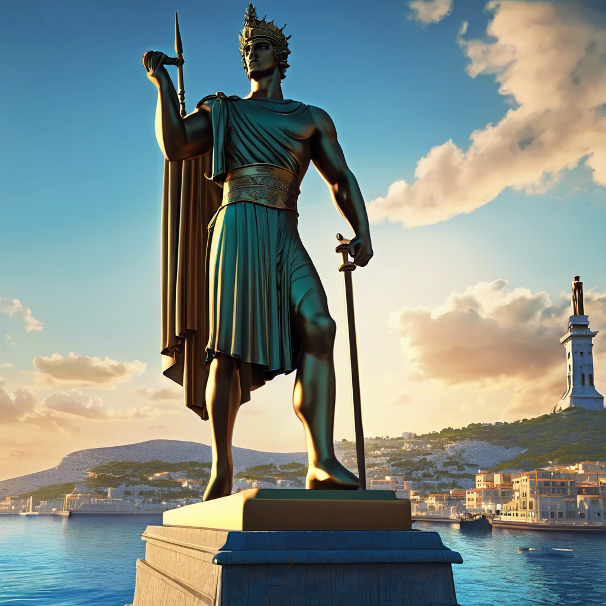

7 - Colosso de Rodes

Erguido em 282 a.C., o Colosso de Rodes – uma estátua do deus grego Hélio – foi construído em Rodes para celebrar um triunfo militar. Com 32 metros de altura, a estátua ficava no mar e representava o deus-sol segurando uma tocha, voltado para o porto de Rodes. O Colosso não foi forte o suficiente para resistir a um terremoto em 226 a.C., e a estátua foi destruída. Os cidadãos de Rodes não quiseram reconstruí-la, uma vez que um oráculo teria dito a eles que haviam ofendido Hélio. Os pedaços gigantes da construção permaneceram no local por mais de 800 anos, quando invasores no século 7 venderam os destroços.